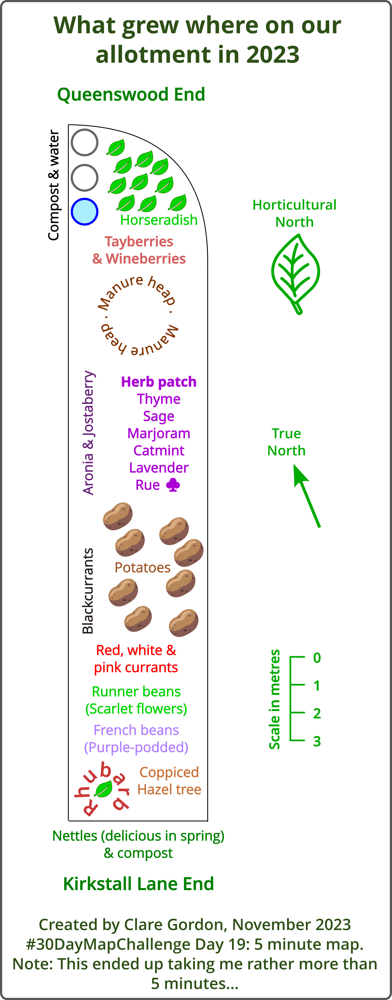

5 minute map
What grew where on our allotment in 2023
Suggested by my husband, and useful for future planning.

Data
What did I learn?
- That it is possible to use emojis as symbols in text in Inkscape (e.g. the clubs symbol next to rue).
- That making a map in 5 minutes is difficult!!!
What would I do differently or would like to change?
- Would like to spend more time on this, e.g. adding images for butterflies and bees! More comments, e.g. about nettles being good for caterpillars.
- Don’t think courgettes have even made it onto the map - add those, beetroot, chard etc!
- Would like to tidy up the layers - started organised but disintegrated under time pressure!
Process
Preparation:
- work out size/scale
- Emojis?
Windows key + . in Windows 10+. Works in Inkscape - just check colour! May depend on font you use…
- Or open-source svg icons? Try svgrepo. Yes, found icons for leaves, potatoes, courgettes etc from here.
Drawing:
- Knew rough size of allotment, so started with drawing the outline to scale.
- Then put in temporary divider lines to mark the sections.
- That made it easier to get plants etc in what is basically the right areas.
- Used text as location markers.
- Then added some svg images, e.g. leaves and potatoes.
- Added north “arrows” and scale bar.
Unfortunately I got carried away and this took way over 5 minutes - more like 50…
Great fun playing with colours and fonts and adding icons. The “Horticultural North” was my husband’s idea.